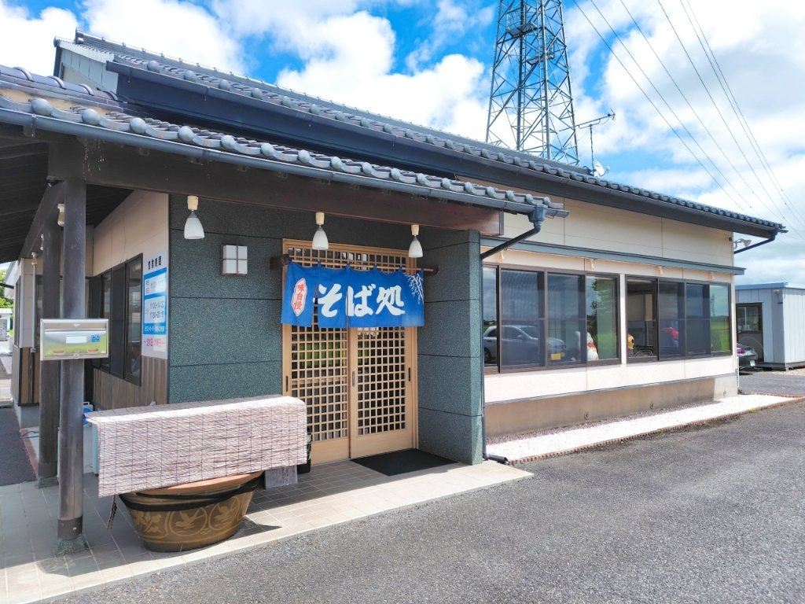
紙には、揚げたてを。
簀には、手打ちを。
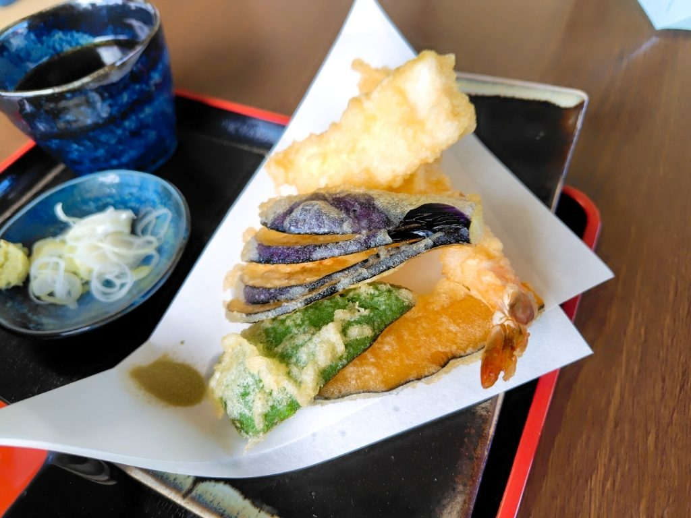
もり・ざるに、天ぷらを添えてお出しする、当店の看板です。衣は薄く、油を切って、揚げたてのままお持ちします。天ぷらはつゆでも、添えた茶塩でも、お好みでお召し上がりください。はじめての方は、まずこちらをお試しください。
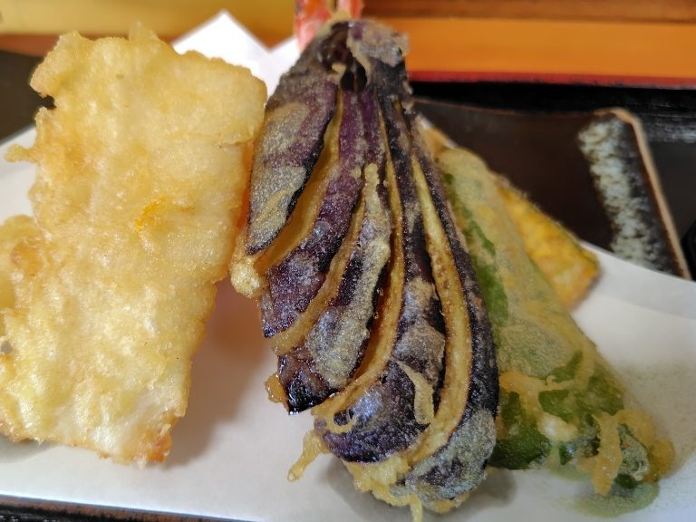
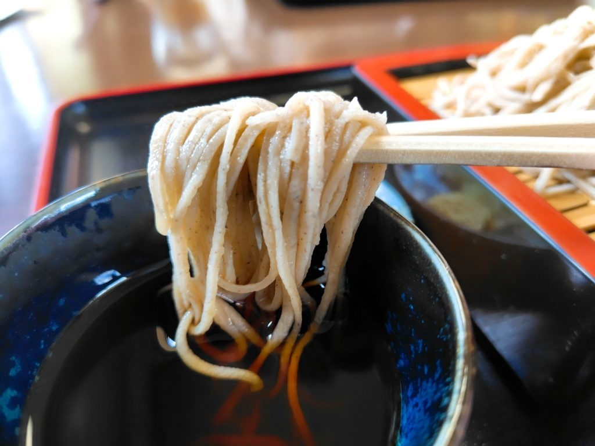
そばも、うどんも、店で手打ちしております。お品書きのどの品も、そばとうどんのどちらかをお選びいただけます。冷たいもり・ざるのほか、かも汁、ちたけ、山菜など、温かい汁ものもご用意しております。大盛も承ります。
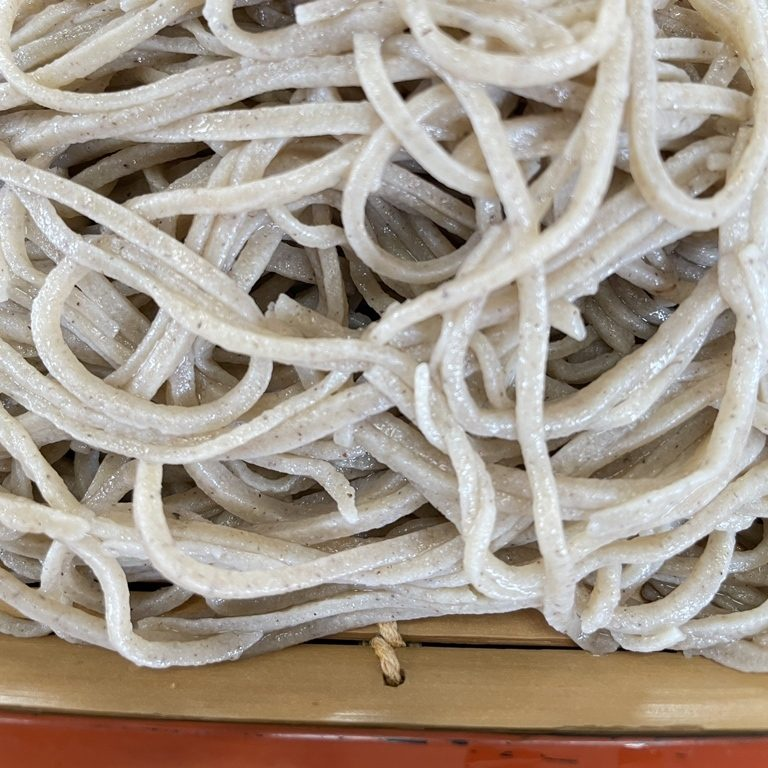
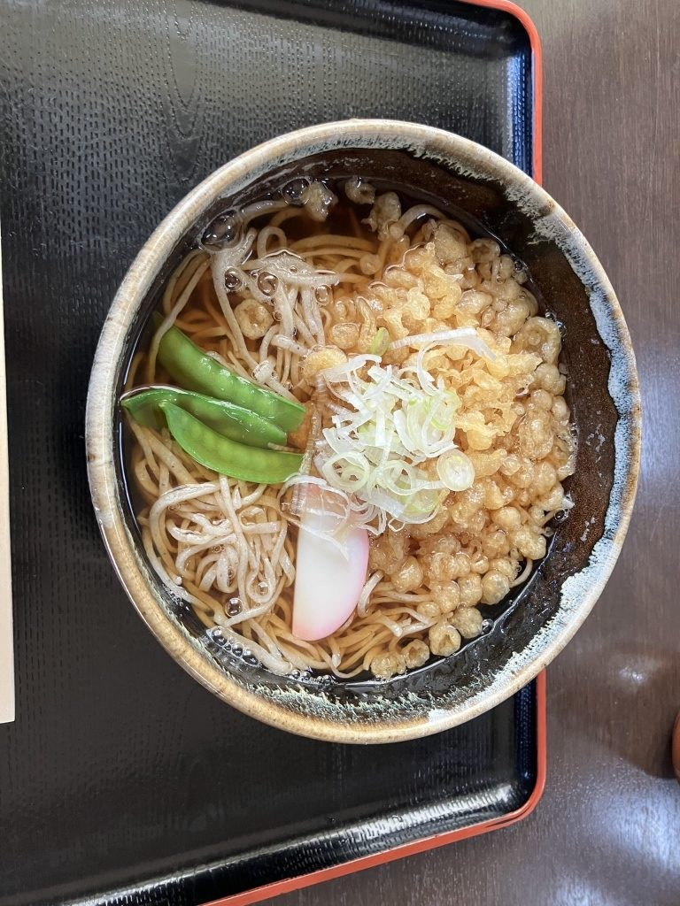
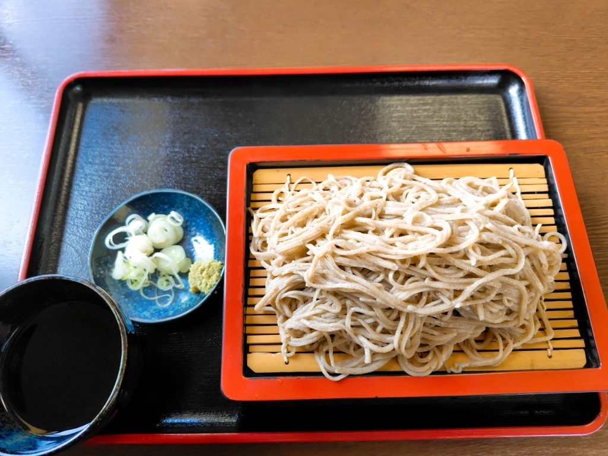
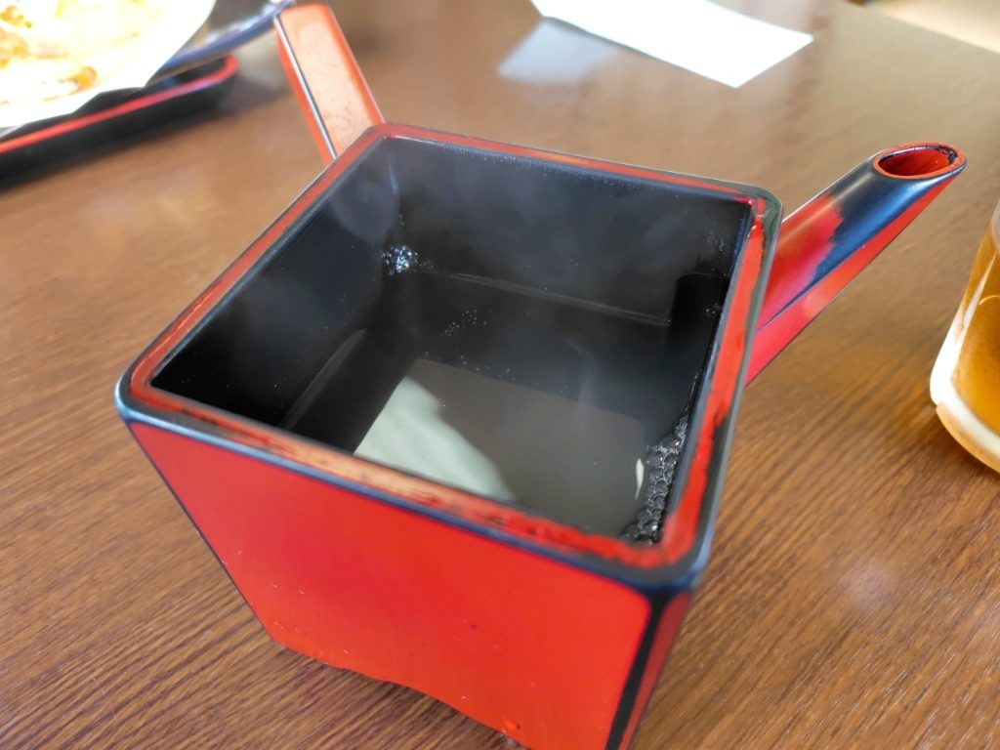
お食事の終わりに、そば湯をお持ちします。つゆのおかわりも承りますので、お声がけください。
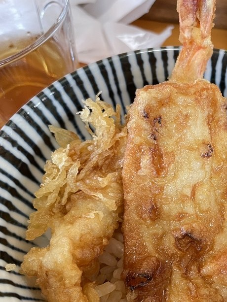
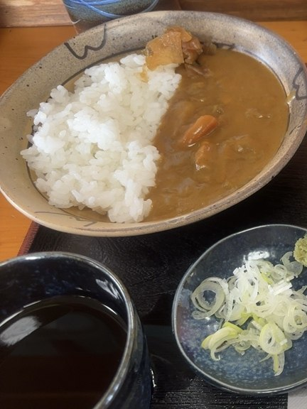
天丼も、揚げたてでお出しします。そば・うどんには、小天丼、小そぼろ丼、小カレーのいずれかをお付けできます。そばのあとに小さな丼で締める、この組み合わせをよくご注文いただきます。カレーライスも単品でご用意しております。
天ぷら盛り合わせのほか、山芋の磯辺揚げ、れんこんのはさみ揚げ、ごぼうのスティック揚げ、わかさぎのフリッター、皮つきポテトフライを、一品でもお出ししております。冬にはもつ煮をご用意します。えだまめ、漬け物の三種盛り、冷やっこもございます。
瓶ビール、お酒、焼酎、角ハイボールもご用意しており、焼酎はボトルでもお出しします。
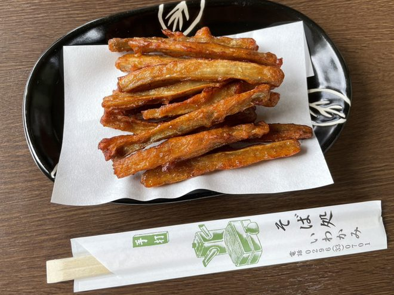
平日と祝日はお昼だけ、土曜・日曜はお昼と夜に営業しております。水曜日は定休日です。お席はカウンター、テーブル、畳の小上がりをご用意しております。お昼どきは混み合い、お待ちいただくことがございます。
| 営業時間 | 平日・祝日 11:00〜14:30 土・日 11:00〜14:30・17:30〜20:15ラストオーダーは閉店40分前 |
|---|---|
| 定休日 | 水曜日 |
「いわかみは蕎麦が美味いのはもちろんですが、天ぷらが最高です。是非天ざる系を食べてみてほしい。薄めの衣が上手にパリッと張り付いて最高の食感と揚げ具合です。」
お客様の声より（2024年4月）
「うどんとそばのどちらも注文できますが、どちらも手打ちで美味しいです。実家に帰省する時によくいきます。今回はたぬきうどんを食べましたが、揚げ玉もサクサクしてて美味しかったです。」
お客様の声より（2026年4月）
「天ぷらは海老、イカ、ナス、ピーマン、カボチャ。茶塩が添えられてます。そばは細め。コシがあり旨い。」
お客様の声より（2026年7月）
県道214号線沿い、中島橋西交差点の近くです。JR水戸線 東結城駅からは、お車でお越しください。駐車場をご用意しております。
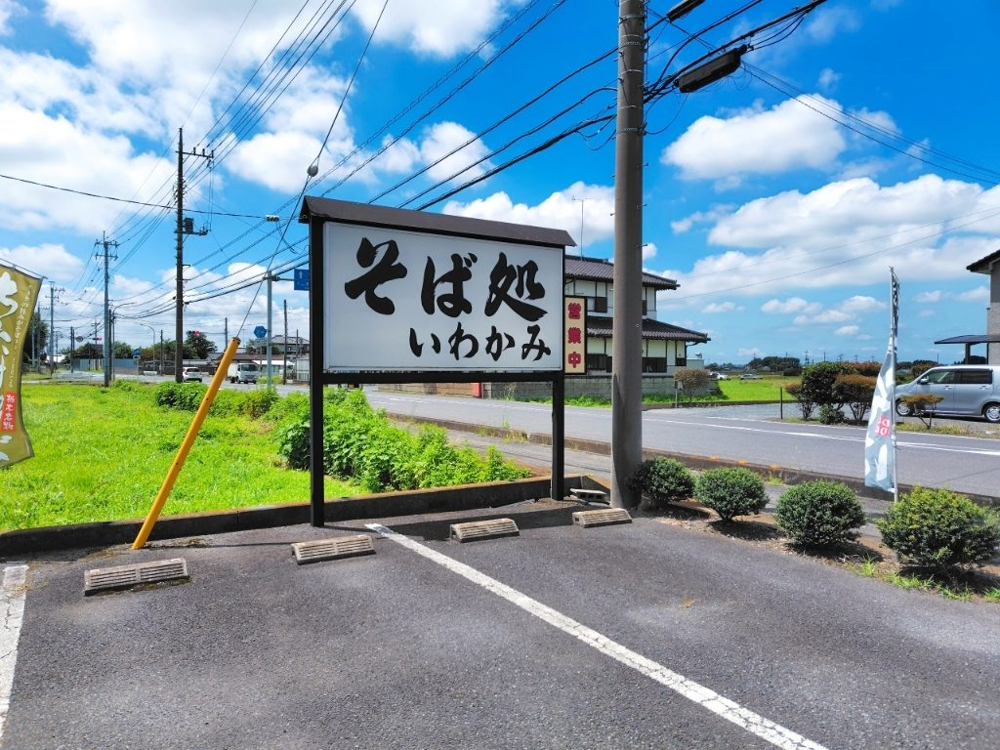
| 住所 | 〒323-0155 栃木県小山市福良575-1 |
|---|---|
| 電話 | 0296-33-0701 |
| 駐車場 | 駐車場がございます |